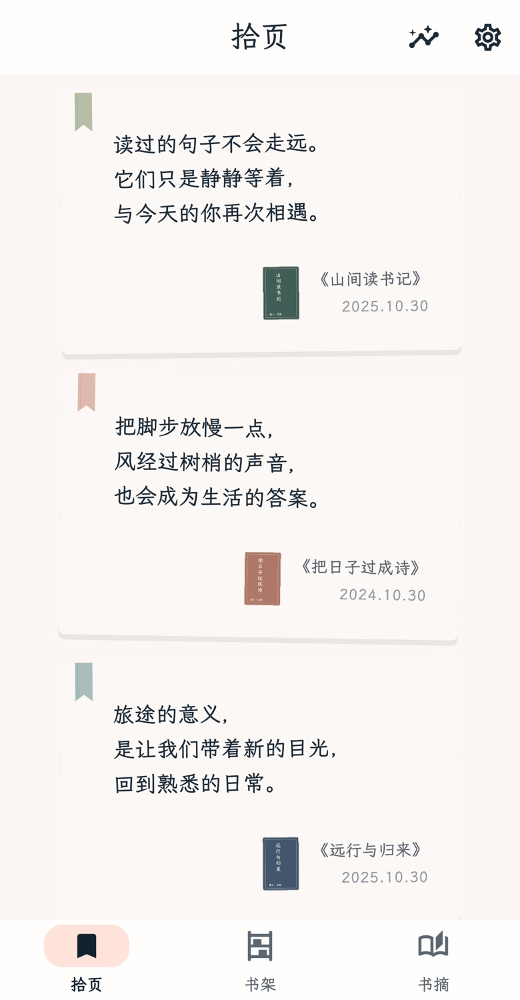
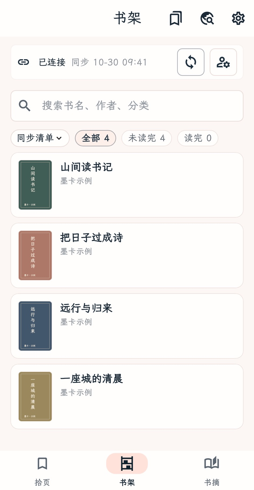
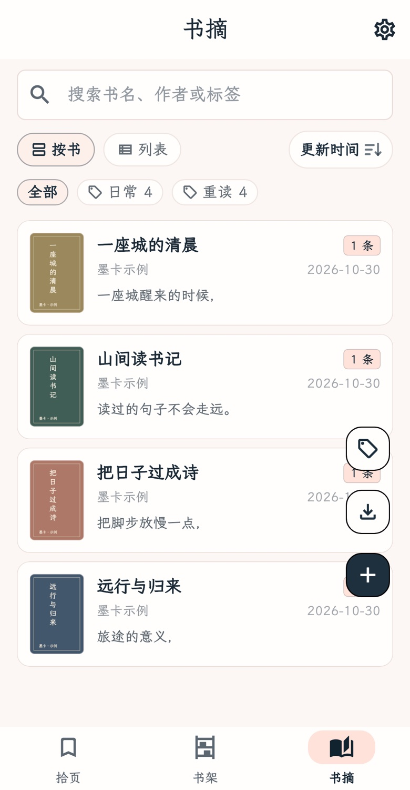
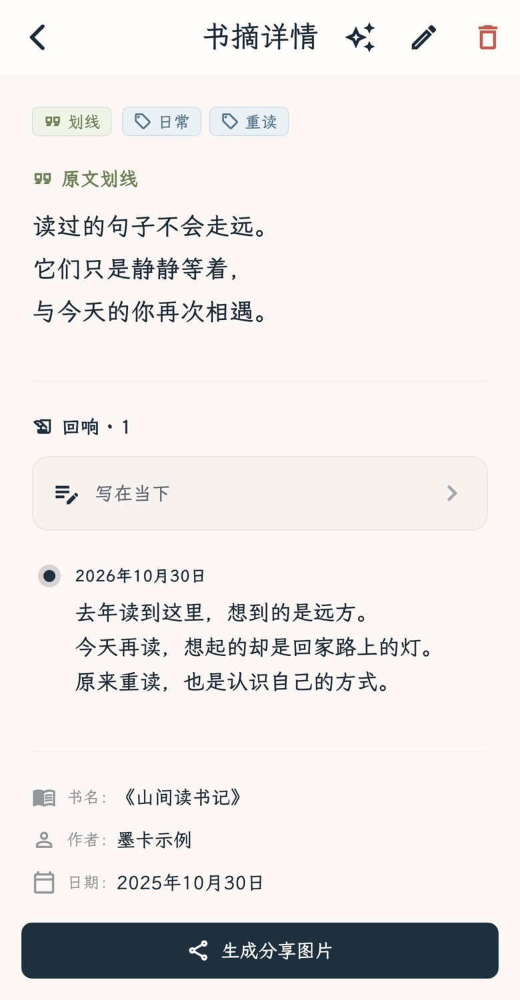
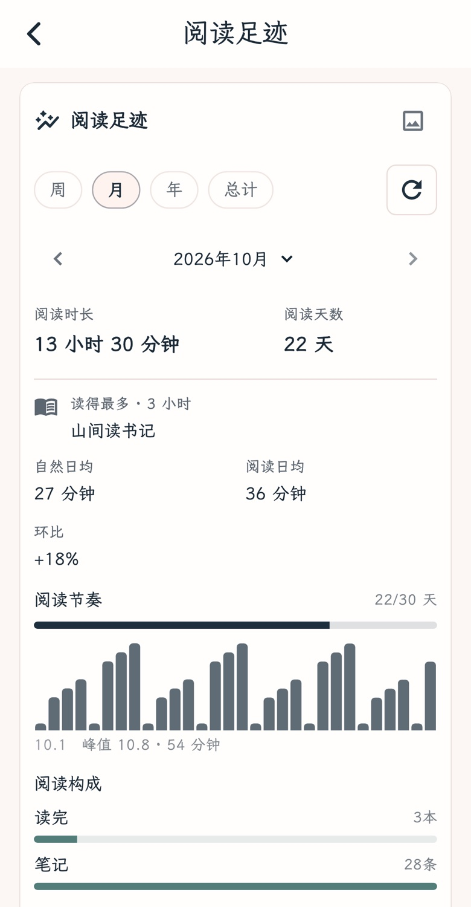
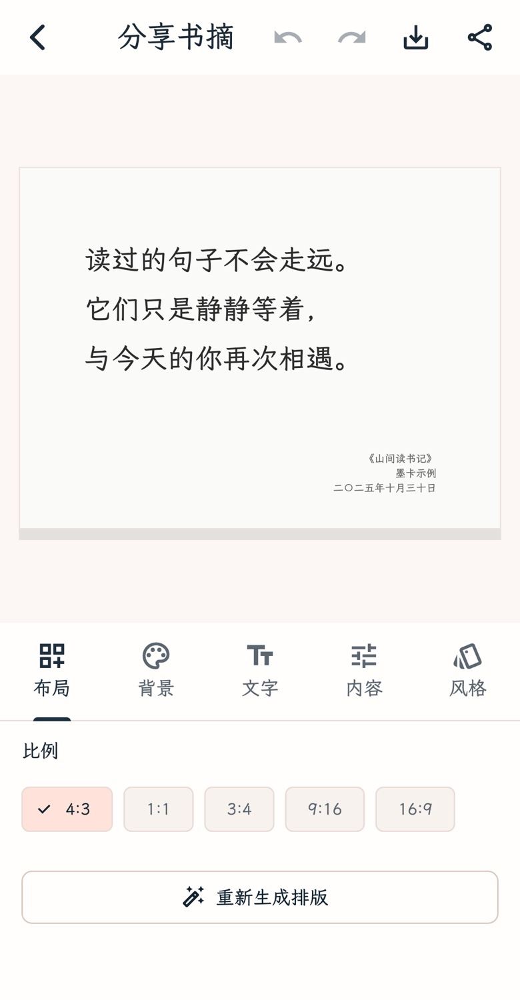

原文划线
有些内容，合上书以后才想明白。
初见所感 · 2024.07.23
第一次划下这句话，只觉得它安静。
写在当下 · 2026.08.26
两年后再读，才发现当时漏看了重点。
墨卡 · 私人阅读整理
同步微信读书里的划线、想法和书评，按书、章节、分类和标签整理。读到旧书摘时，还可以补充新的想法。
iPhone 版需要 iOS 15 或更高版本 · 核心书摘默认保存在本机
墨卡 0.5 · 功能预览
拾页、书架与书摘，各有自己的位置。以下界面使用示例内容；iOS 新版本以上架进度为准。






书摘整理
每条记录保留原来的身份，可按划线、想法、书评和回响筛选。单本书默认按章节顺序排列；章节资料不完整时，页面会提示排序可能不准确。
第五章 · 回看
有些内容，合上书以后才想明白。
2024.07.23再次读到时，我补充了当时没有写下的想法。
2024.07.24 · 2 条回响这一章让前面的疑问有了落点。
2024.07.26同步清单
同步范围
先在同步清单里选择要整理的书。默认书架和笔记导入只显示清单中的内容，微信读书书架里的其他收藏不会被移除。
回响
书摘详情支持添加多条回响，也可以编辑或删除。分享书摘或使用智能整理时，这些内容会一起作为上下文。
第一次读到，只觉得它安静。
后来再读，注意到了当时忽略的部分。
此刻落笔，来日重逢。
拾页
纸感书签依次展开往年书摘，封面与摘录日期安静地留在右下角。轻触书签，重读那句话，也写下今天的想法。阅读足迹收在独立页面，随时回看阅读节奏。
其他功能
没有书名的记录会归入“心迹”，名称可以在设置里修改。
选择布局、背景和文字，生成并保存书摘图片。
配置服务后手动使用；保存前会先显示生成结果。
数据与备份
核心书摘与资料库默认保存在设备中。可导出文件备份并在其他设备恢复；Apple 设备还可选择备份到个人 iCloud，并按设备保留最近 3 份；微信读书 Key 与 AI API Key 不进入备份。
下载墨卡